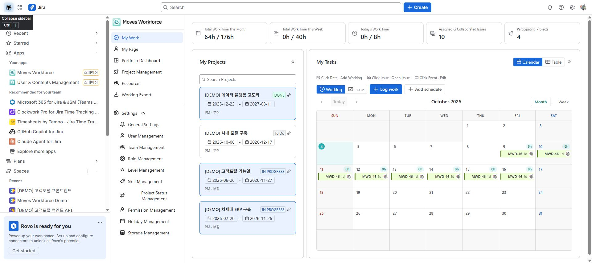

Review draft: English screenshots were captured on the designated staging site on 2026-10-04 and are shared by both language guides. The deployed version and role-specific access and save operations remain under review.
Use this guide to record your time and check its project context. For a new installation, an administrator must first complete initial setup.
The names and values below are illustrative. Replace them with your own project, Jira issue, and actual work date. Use an existing project when one is already prepared.
| Prerequisite | Example | If it is missing |
|---|---|---|
| App project | Demo website launch | An administrator creates the project. |
| App user and project member | Your Jira account | An administrator registers you in the app and adds you to the project. |
| Jira issue | DEMO-12 Write test scenarios | Prepare an accessible issue in Jira, then link it to the project. |
| Time to record | 2026-10-05, 09:00–12:30 | Replace these values with your actual date and times. |
Completion check: You have checked your worklog and both project relationships. Saving time does not register a project member or link an issue automatically. For empty analysis, check work date → issue link → project membership → visibility scope → aggregation time.
DEMO-12 Write test scenarios.
Moves Workforce under Apps in the Jira sidebar.
An unsaved worklog with a sample issue and times of 09:00–12:30, calculating 3 hours 30 minutes.
This is a Jira worklog. Creating a separate entry in both Jira and the app for the same work would duplicate it, so check existing records first.
Assigning a Jira issue, registering a project member, and linking an issue to a project are separate actions. Completing one does not automatically complete the others.
| Check | Expected result |
|---|---|
| Your worklog | An entry with the selected issue, date, and duration |
| Your project | Projects consistent with your permissions and assignments |
| Project analysis | The relevant period, people, and issues can be checked |
| Portfolio dashboard | You check the aggregation timestamp before interpreting results |
If a menu is missing or an issue cannot be selected, use the FAQ. You do not need to change every setting to get started.